Campagne de tests terrain de l'application VTC UpJunoo Pro : 4 véhicules, 1 contrôleur par véhicule, 6 clients. Sept scénarios exécutés (commandes simultanées, refus / redistribution, hors ligne, annulations passager et chauffeur, rechargement portefeuille, réception en cours de course). Ce document présente le déroulé, les observations UX, les anomalies et les recommandations, illustrés par 13 captures d'écran.
Campagne de tests à échelle humaine — Abidjan (Cocody / Rosiers — Y4), 23 juin 2026.
| # | Scénario | Résultat | Points marquants |
|---|---|---|---|
| 2 | Commandes simultanées | Réussi | Course complète exécutée ; observations UX carte & voix |
| 3 | Refus et redistribution | À rejouer | Chauffeur 3 sans demande (hypothèse réseau) |
| 4 | Chauffeurs hors ligne | Réussi | Aucune commande reçue hors ligne |
| 5 | Annulation par le passager | Réussi | Notification d'annulation correcte |
| 6 | Annulation par le chauffeur | Réussi | Choix du motif + mention des frais |
| 7 | Rechargement du portefeuille | Non terminé | Solde insuffisant + message USSD incomplet |
| + | Réception de commande pendant une course | Réussi | Aucune nouvelle demande en course |
Plusieurs commandes lancées simultanément ; le véhicule du Chauffeur 3 a déroulé une course complète.
Le guidage vocal était fonctionnel et indiquait les changements de direction. Cependant, les distances annoncées vocalement étaient exprimées en miles alors que le kilomètre est l'unité utilisée en Côte d'Ivoire (l'affichage à l'écran, lui, est bien en m/km).
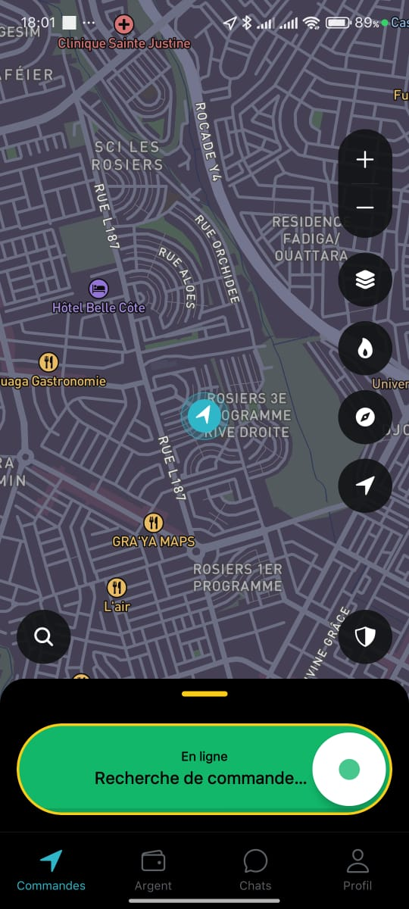
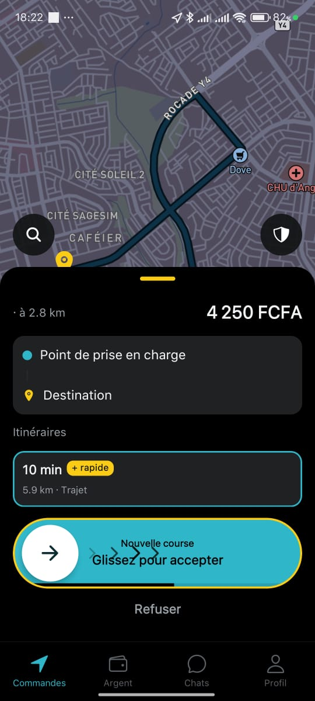
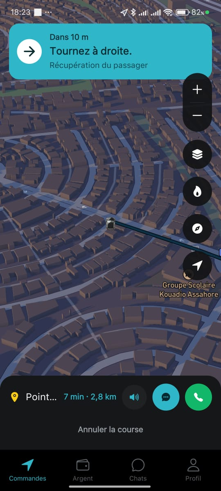
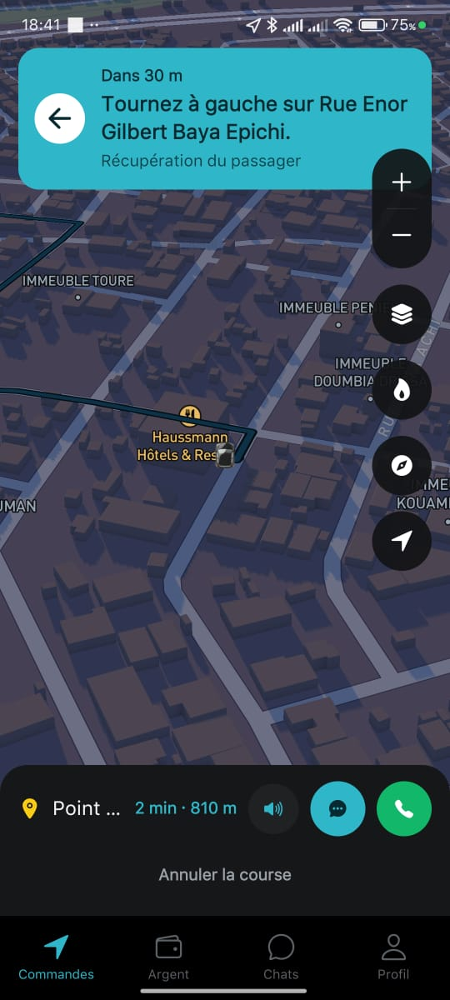
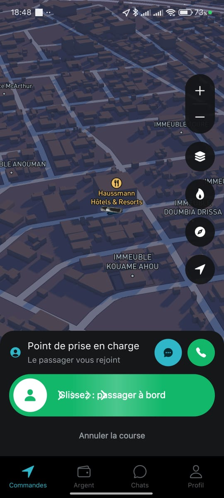
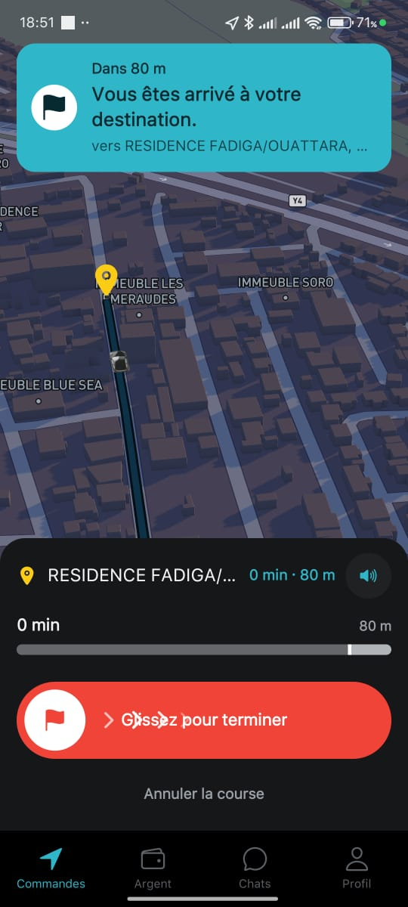
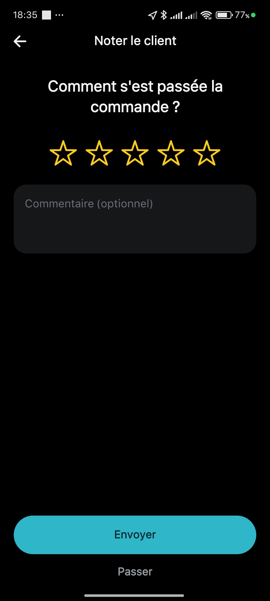
Refus / redistribution de commande, puis comportement hors ligne.
Objectif : Chauffeurs 1 & 2 laissent expirer la demande, Chauffeur 3 refuse, Chauffeur 4 accepte.
Observation : le Chauffeur 3 était positionné juste derrière les locaux de l'entreprise (point de départ des tests). Malgré sa proximité, il n'a reçu aucune demande, restant en « Recherche de commande… » (état identique à la capture IS2).
Aucune capture spécifique pour ce scénario : l'écran restait sur l'état « En ligne / Recherche de commande… » (cf. IS2).
Objectif : mettre tous les chauffeurs hors ligne et vérifier qu'aucune commande ne leur soit transmise.
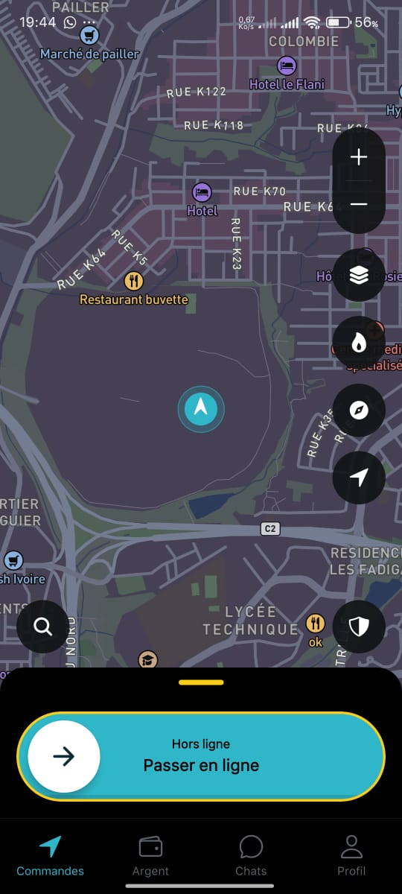
Annulation à l'initiative du passager, puis à l'initiative du chauffeur.
Le client commande, le chauffeur accepte, puis le client annule. Résultat : succès. Le chauffeur a été correctement notifié de l'annulation et est revenu en recherche de commande.
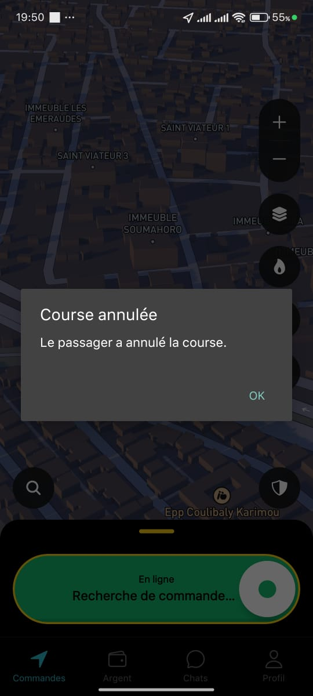
Le chauffeur accepte une course, navigue vers le client, puis annule en sélectionnant un motif. Résultat : succès. L'application propose une liste de motifs, avec mention explicite des frais pour certains motifs (« Annulation tardive », « Client absent »).
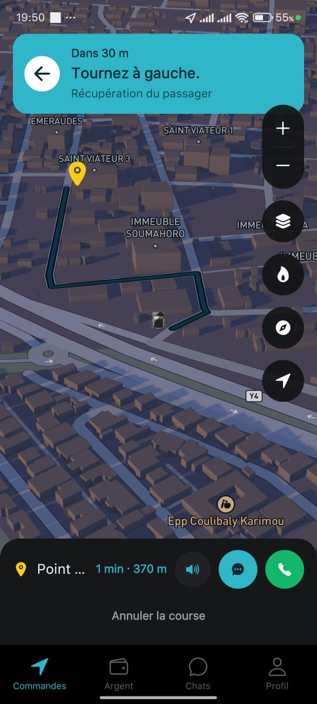
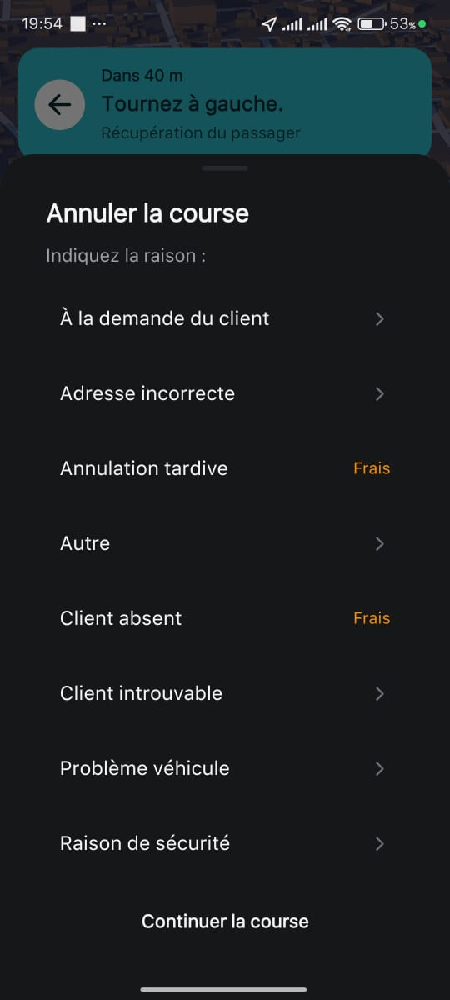
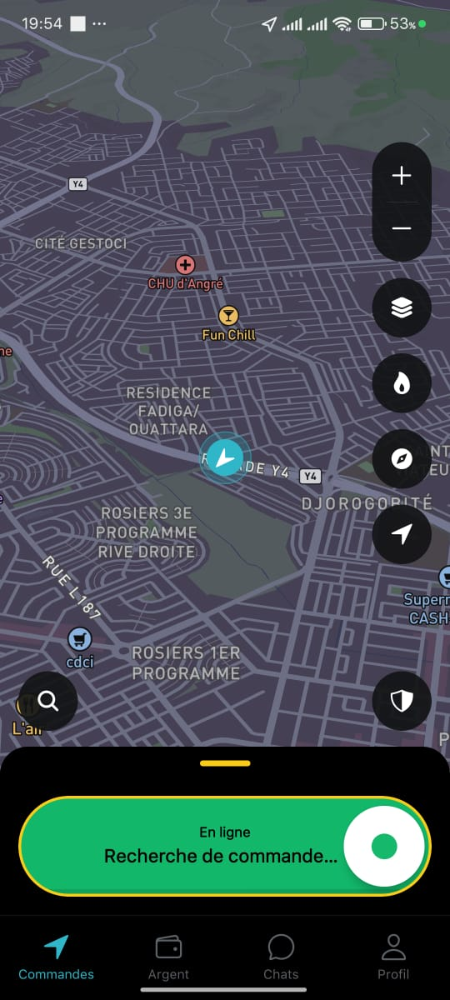
Rechargement du portefeuille chauffeur via Orange Money CI.
Le test n'a pas pu être mené à son terme : le solde Orange Money utilisé pour l'opération était insuffisant. Nous avons néanmoins constaté l'affichage de l'interface USSD de validation de l'opérateur (rechargement de 500 FCFA via Orange Money CI, frais 0 FCFA, bénéficiaire « DUNYA DIGITAL PAYMENT CI »).
Le message affiché par l'interface de l'opérateur était incomplet : « Veuillez saisir votre » — le libellé s'interrompait avant l'élément à saisir.
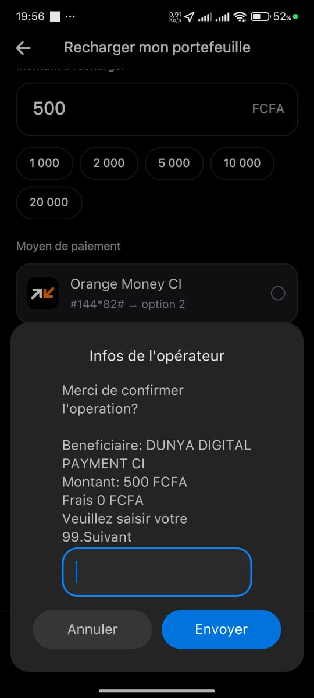
Scénario non prévu dans la fiche de test, réalisé en complément.
Objectif : vérifier qu'un chauffeur déjà engagé dans une course ne reçoive pas de nouvelles demandes.
Organisation et logistique des prochaines campagnes.
Effectuer les tests entre 08h00 et 14h00 pour bénéficier de :
Certaines positions choisies sur la carte se sont révélées difficiles d'accès, ce qui peut introduire un léger biais.
Certains chauffeurs sont arrivés avant d'autres à cause des distances à parcourir.
Les points de destination du scénario 2 pourraient servir de points de départ au scénario 3.
Dans l'ensemble, les scénarios testés ont été exécutés avec succès et les fonctionnalités principales se sont comportées conformément aux attentes. Les principales améliorations concernent la lisibilité de la navigation, l'affichage cartographique, certains messages utilisateur et l'organisation logistique des futures campagnes. Le scénario 3 (Chauffeur 3 sans demande) reste à rejouer pour confirmer l'hypothèse réseau, et le scénario 7 (rechargement) à reconduire avec un solde suffisant.
Nomenclature I<n>S<scénario> · dossier screenshots/ (13 fichiers .jpeg).
| Fichier | Scén. | Heure | Contenu de la capture |
|---|---|---|---|
IS2.jpeg | 2 | 18:01 | Chauffeur en ligne, « Recherche de commande… » |
I2S2.jpeg | 2 | 18:22 | Réception d'une nouvelle course (4 250 FCFA, 2,8 km) |
I3S2.jpeg | 2 | 18:23 | Navigation vers le client (« Tournez à droite », carte sombre) |
I4S2.jpeg | 2 | 18:41 | Navigation (« Tournez à gauche sur Rue Enor », 810 m) |
I5S2.jpeg | 2 | 18:48 | Arrivée au point de prise en charge / embarquement |
I6S2.jpeg | 2 | 18:51 | Arrivée à destination (« Glissez pour terminer ») |
I8S2.jpeg | 2 | 18:35 | Notation du client en fin de course |
IS4.jpeg | 4 | 19:44 | Chauffeur hors ligne (« Passer en ligne ») |
I2S5.jpeg | 5 | 19:50 | « Course annulée — Le passager a annulé la course » |
I3S6.jpeg | 6 | 19:50 | Navigation vers le client avant annulation (370 m) |
IS6.jpeg | 6 | 19:54 | Annulation chauffeur : sélection du motif (« Frais ») |
I4S6.jpeg | 6 | 19:54 | Retour en « En ligne / Recherche de commande… » |
IS7.jpeg | 7 | 19:56 | Rechargement portefeuille (Orange Money) + message USSD incomplet |